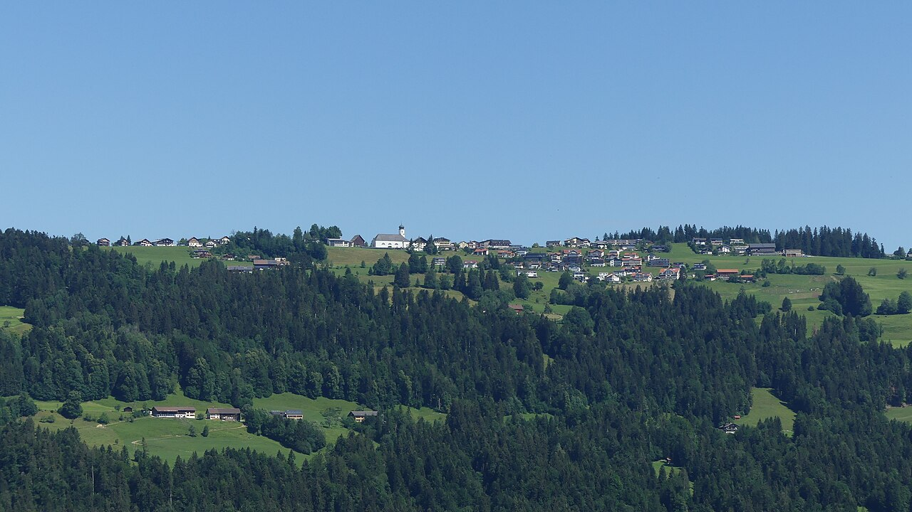

Die Wassergenossenschaft Sulzberg-Sonnenseite versorgt den Ortsteil Sonnenseite der Gemeinde Sulzberg zuverlässig mit frischem Trinkwasser aus der Region.
Gültig ab 1. Jänner 2026.
| Gebühr | Betrag |
|---|---|
| Wasserbezug (laut Zählerstand) | € 1,045 / m³ |
| Grundgebühr | € 176,00 / Jahr |
| Anschlussbeitrag (4 Anteile) | € 2.400,00 |
| Erschließungsbeitrag (je nach Bauprojekt) | mind. € 2.600,00 |
| Zusätzliches Wasserbezugsrecht (Anteil) | € 330,00 / Anteil |
| Bearbeitungsgebühr (ohne Einzugsermächtigung) | € 10,00 / Abrechnung |
Ein Hauswasseranschluss mit 4 Anteilen entspricht 240 m³ Wasser/Jahr (1 Anteil = 60 m³). Alle Preise inkl. 10% MwSt. Details siehe Gebühren-Info.
Wasserhärte: 16,0 °dH (hart)
Unser Wasser wird regelmäßig untersucht und entspricht allen gesetzlichen Anforderungen. Die folgenden Werte stammen aus der Probenahme vom 04.05.2026 am Hochbehälter Stein nach der UV-Anlage (Umweltinstitut Vorarlberg).
| Parameter | HB Stein (nach UV) |
|---|---|
| Gesamthärte | 16,0 °dH |
| pH-Wert | 7,4 |
| Leitfähigkeit (25 °C) | 548 µS/cm |
| Calcium | 72 mg/l |
| Magnesium | 26 mg/l |
| Natrium | 4,7 mg/l |
| Nitrat | 5,3 mg/l |
| Chlorid | 5,0 mg/l |
| Sulfat | 2,9 mg/l |
| Eisen | < 2 µg/l |
| Mikrobiologie | unauffällig |
Grenzwert Nitrat lt. Trinkwasserverordnung: 50 mg/l. Unser Wasser liegt weit darunter.